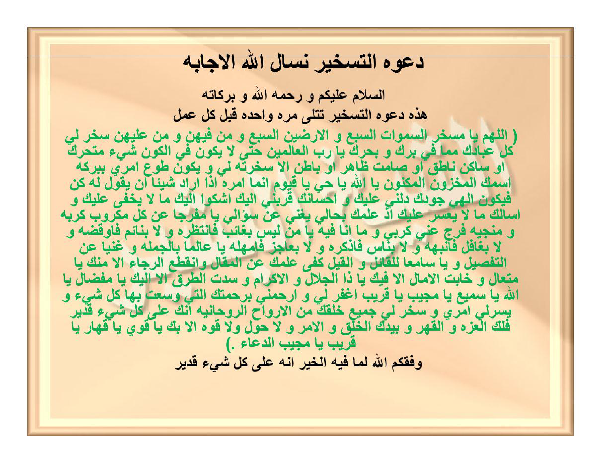

Da'watut-taskhīri nas'alullāhal-ijābata.
As-salāmu 'alaikum wa rahmatullāhi wa barakātuhū.
Hādzihī da'watut-taskhīri tutlā marratan wāhidatan qabla kulli 'amalin:
( Allāhumma yā Musakhkhiras-samāwātis-sab'i wal-aradhīnas-sab'i wa man fīhinna wa man 'alaihinna sakhkhir lī kulla 'ibādika mimmā fī barrika wa bahrika yā Rabbal-'ālamīna hattā lā yakūna fil-kauni syai'un mutaharrikun au sākinun nāthiqun au shāmitun zhāhirun au bāthinun illā sakhkhartahū lī wa yakūna thau'a amrī bibarakatismikal-makhzūnil-maknūni yā Allāhu yā Hayyu yā Qayyūmu innamā amruhū idzā arāda syai'an an yaqūla lahū kun fayakūnu. Ilāhī jūduka dallanī 'alaika wa ihsānuka qarrabanī ilaika asykū ilaika mā lā yakhfā 'alaika wa as'aluka mā lā ya'suru 'alaika idz 'ilmuka bihālī yughnī 'an su'ālī yā Mufarrijan 'an kulli makrūbin karbahū wa munjiyahū farrij 'annī karbī wa mā anā fīhi yā man laisa bighā'ibin fa-antazhirahū wa lā binā'imin fa-ūqizhahū wa lā bighāfilin fa-unabbihahū wa lā bināsin fa-udzakkirahū wa lā bi'ājizin fa-umhilahū yā 'Āliman bil-jumlati wa Ghaniyyan 'anit-tafshīli wa yā Sāmi'an lil-qā'ili wal-qīli kafā 'ilmuka 'anil-maqāli wanqatha'ar-rajā'u illā minka yā Muta'āli wa khābatil-āmālu illā fīka yā Dzal-jalāli wal-ikrāmi wa suddatith-thuruqu illā ilaika yā Mifdhālu yā Allāhu yā Samī'u yā Mujību yā Qarību ighfir lī warhamnī birahmatikal-latī wasi'ta bihā kulla syai'in wa yassir lī amrī wa sakhkhir lī jamī'a khalqika minal-arwāhir-rūhāniyyati innaka 'alā kulli syai'in qadīrun falakal-'izzatu wal-qahru wa biyadikal-khalqu wal-amru wa lā haula wa lā quwwata illā bika yā Qawiyyu yā Qahhāru yā Qarību yā Mujībad-du'ā'i. )
Waffaqakumullāhu limā fīhil-khairu innahū 'alā kulli syai'in qadīrun.
Doa Taskhīr (penundukan), kami memohon kepada Allah pengabulannya.
Assalamu'alaikum warahmatullahi wabarakatuh.
Inilah Doa Taskhīr yang dibaca satu kali sebelum setiap amalan:
( Ya Allah, wahai Dzat Yang Menundukkan tujuh lapis langit dan tujuh lapis bumi beserta siapa saja yang berada di dalamnya dan di atasnya, tundukkanlah bagiku seluruh hamba-Mu dari apa yang ada di daratan-Mu dan di lautan-Mu, wahai Tuhan semesta alam; sehingga tidak ada sesuatu pun di alam semesta ini, baik yang bergerak maupun yang diam, yang berbicara maupun yang bisu, yang tampak lahir maupun yang tersembunyi batin, melainkan Engkau telah menundukkannya bagiku dan menjadikannya patuh pada urusanku dengan keberkahan Nama-Mu yang tersimpan lagi terjaga rapat; wahai Allah, wahai Yang Maha Hidup, wahai Yang Maha Berdiri Sendiri mengurus makhluk-Nya; Sesungguhnya urusan-Nya apabila Dia menghendaki sesuatu hanyalah berkata kepadanya: “Jadilah!” maka terjadilah ia — QS. Yāsīn: 82. Tuhanku, kemurahan-Mu telah menunjukiku kepada-Mu, dan kebaikan-Mu telah mendekatkanku kepada-Mu; aku mengadukan kepada-Mu apa yang tidak tersembunyi bagi-Mu, dan aku memohon kepada-Mu apa yang tidak sulit bagi-Mu, karena sesungguhnya pengetahuan-Mu tentang keadaanku telah mencukupkan aku dari permintaanku. Wahai Dzat Yang Melapangkan kesusahan dari setiap orang yang dirundung duka serta menyelamatkannya, lapangkanlah dariku kesusahanku dan apa yang sedang aku alami; wahai Dzat yang tidak pernah gaib (tidak hadir) sehingga aku harus menunggu-Nya, tidak pernah tidur sehingga aku harus membangunkan-Nya, tidak pernah lalai sehingga aku harus menyadarkan-Nya, tidak pernah lupa sehingga aku harus mengingatkan-Nya, dan tidak pernah lemah sehingga aku harus memberi-Nya tangguh; wahai Dzat Yang Maha Mengetahui secara keseluruhan dan tidak membutuhkan perincian, wahai Dzat Yang Maha Mendengar orang yang berkata maupun perkataan yang diucapkan; cukuplah ilmu-Mu tanpa perlu untaian kata-kata, telah terputus segala harapan kecuali dari-Mu wahai Yang Maha Tinggi, telah hampa segala cita-cita kecuali kepada-Mu wahai Pemilik Keagungan dan Kemuliaan, dan telah tertutup seluruh jalan kecuali menuju kepada-Mu wahai Yang Maha Melimpahkan karunia. Wahai Allah, wahai Yang Maha Mendengar, wahai Yang Maha Mengabulkan, wahai Yang Maha Dekat; ampunilah aku dan rahmatilah aku dengan rahmat-Mu yang dengannya Engkau meliputi segala sesuatu, mudahkanlah bagiku urusanku, dan tundukkanlah bagiku seluruh makhluk-Mu dari kalangan ruh-ruh ruhaniyyah; sesungguhnya Engkau Maha Kuasa atas segala sesuatu. Maka hanya milik-Mu kemuliaan dan keperkasaan penundukan, di tangan-Mu segala penciptaan dan perintah, serta tiada daya dan tiada kekuatan melainkan dengan pertolongan-Mu, wahai Yang Maha Kuat, wahai Yang Maha Menundukkan, wahai Yang Maha Dekat, wahai Yang Maha Mengabulkan doa ).
Semoga Allah memberikan taufik kepada kalian menuju apa yang di dalamnya terdapat kebaikan; sesungguhnya Dia Maha Kuasa atas segala sesuatu.
